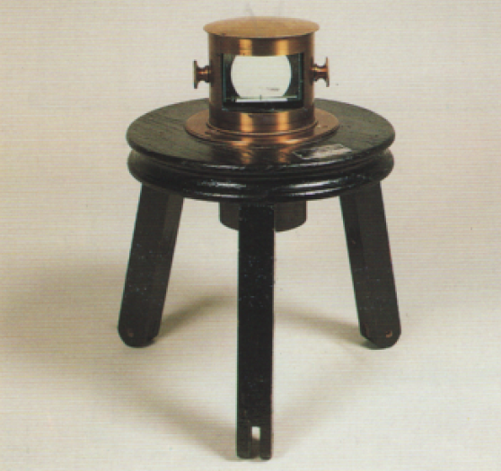

Camera oscura a prisma di Chevalier
Scuola di provenienza: Liceo Statale "P. E. Imbriani", Avellino
Settore: Ottica
Costruttori: Sconosciuto
Materiali: legno di noce, ottone e vetro
Accessori: Nessuno
Stato di conservazione: Buono, ma privo della base e della copertura in stoffa
Descrizione: È costituita da un astuccio di ottone con all'interno un prisma triangolare che funge da lente convergente e da specchio. I raggi emessi da un oggetto, dopo esser penetrati nel prisma e aver subito sulla faccia trasversale la riflessione totale, formano, all'uscita, un'immagine reale dell'oggetto. Questa viene raccolta su un foglio poggiato su una tavola orizzontale posta nel fuoco del prisma. L'apparato è cinto da una cortina nera e il disegnatore collocandosi sotto la medesima si trova nell'oscurità.